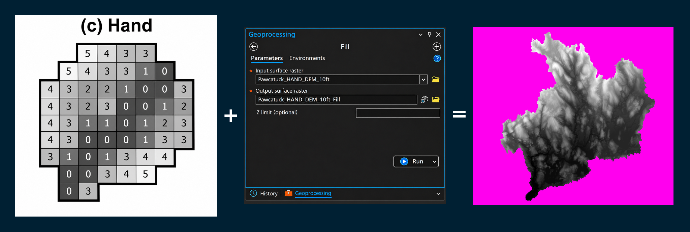
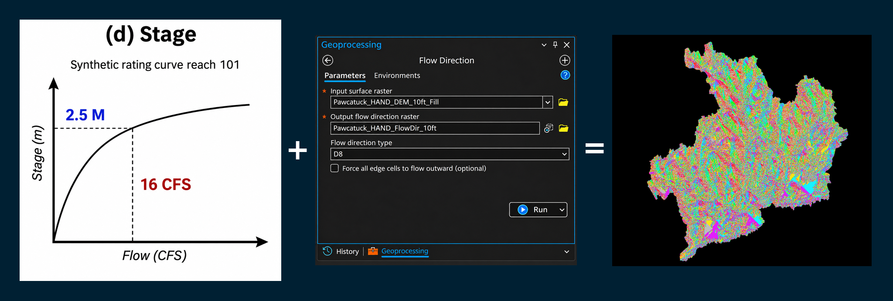

HAND flood-inundation workflow · Wood–Pawcatuck Watershed
(a) Catchment
01 — Catchment / Aggregate reference illustration
Open Catchment to view its illustration and seven ArcGIS Pro operations. Each operation has a separate, left-aligned image chevron; close the image without hiding its instructions or checklist.
Checklist progress0 of 7 completed
Before you start: Add a DEM covering the entire contributing drainage area, not merely the clipped study boundary. Add your watershed reference boundary. Confirm the Spatial Analyst extension is licensed. In geoprocessing Environments, use the DEM for Snap Raster and Cell Size, and avoid clipping the analysis extent at the watershed boundary before delineation.
View supporting illustration

03 — Fill
Image unavailable: Images/03_Fill_HAND_Method.png
In ArcGIS Pro select Analysis → Tools, search for Fill (Spatial Analyst Tools → Hydrology).
Input surface raster
Your DEM
Output surface raster
DEM_Filled
Z limit
Leave blank initially
Click Run. Review whether filling depressions is suitable for your terrain and hydrologic conditioning needs.
View supporting illustration

04 — Flow Direction
Image unavailable: Images/04_Flow_HAND_Method.png
Select Analysis → Tools and search for Flow Direction (Spatial Analyst Tools → Hydrology).
Input surface raster
DEM_Filled
Output flow direction raster
Flow_Direction
Flow direction type
D8
Click Run. Keep this D8 raster for the Watershed operation.
Select Analysis → Tools and search for Flow Accumulation (Spatial Analyst Tools → Hydrology).
Input flow direction raster
Flow_Direction
Output accumulation raster
Flow_Accumulation
Input weight raster
Leave blank
Click Run. High-accumulation cells help identify drainage pathways.
View supporting illustration
No corresponding illustration supplied for this operation. The steps and parameters below are retained.
In the Catalog pane, right-click your geodatabase → New → Feature Class.
Name it Catchment_Outlet, choose Point, and use a coordinate system compatible with your analysis.
Add the empty feature class to your map.
Select Edit → Create, place a point at the desired downstream drainage outlet, and Save Edits.
The outlet controls which upstream area the Watershed tool will delineate.
View supporting illustration
No corresponding illustration supplied for this operation. The steps and parameters below are retained.
Select Analysis → Tools and search for Snap Pour Point (Spatial Analyst Tools → Hydrology).
Input raster or feature pour point data
Catchment_Outlet
Input accumulation raster
Flow_Accumulation
Snap distance
Start with 2–3 DEM cell widths, expressed in the input map's linear units; adjust after inspection
Pour point field
Unique integer identifier, such as OBJECTID
Output raster
Snapped_Outlet
Click Run. Check the resulting location carefully: a snap to the wrong branch will delineate the wrong catchment.
View supporting illustration
No corresponding illustration supplied for this operation. The steps and parameters below are retained.
Select Analysis → Tools and search for Watershed (Spatial Analyst Tools → Hydrology).
Input D8 flow direction raster
Flow_Direction
Input raster or feature pour point data
Snapped_Outlet
Pour point field
Value
Output raster
Catchment_Raster
Click Run. This output identifies the upstream cells draining to your outlet.
View supporting illustration
No corresponding illustration supplied for this operation. The steps and parameters below are retained.
Select Analysis → Tools and search for Raster to Polygon (Conversion Tools → From Raster).
Input raster
Catchment_Raster
Field
Value
Simplify polygons
Unchecked for cell-edge fidelity
Output polygon features
Catchment_Boundary
Click Run. Compare the boundary with the outlet, drainage network, ridgelines, and authoritative watershed reference. Investigate unexpected gaps or deviations.
Scope: This procedure delineates a catchment; it does not calculate HAND values, flood depth, or inundation extent. Catchment boundaries derived from unconditioned DEMs may differ from authoritative hydrography, particularly around culverts, bridges, and engineered drainage.